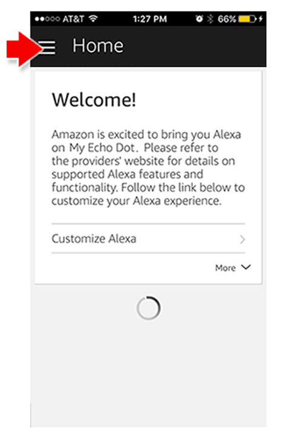
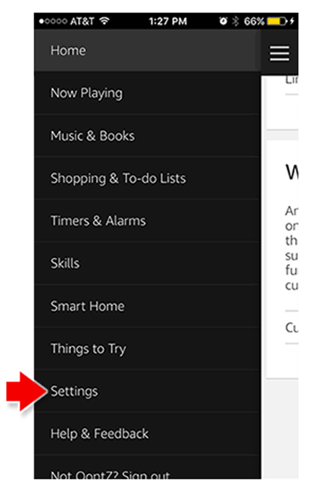
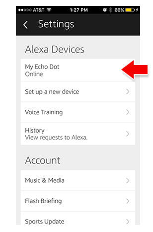
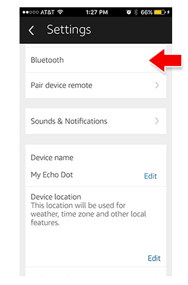
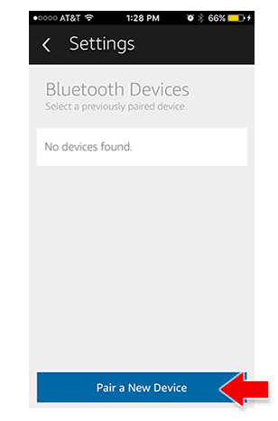
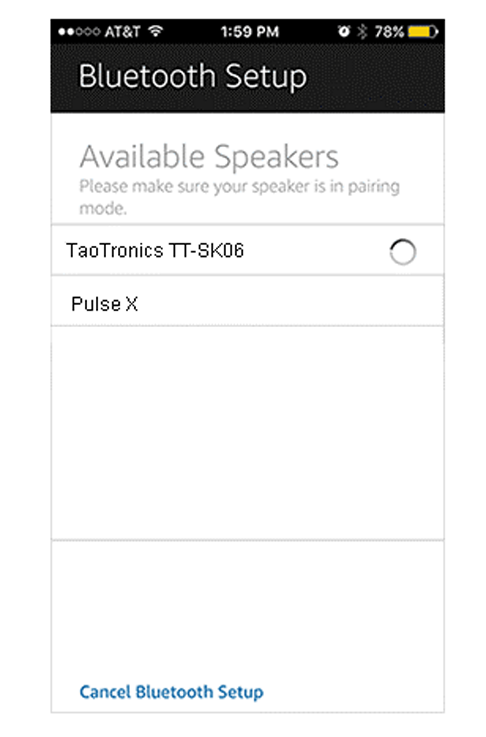
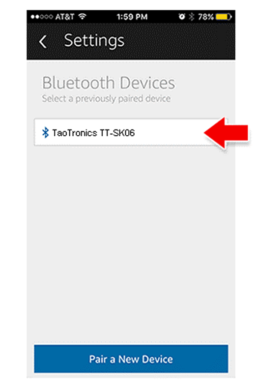
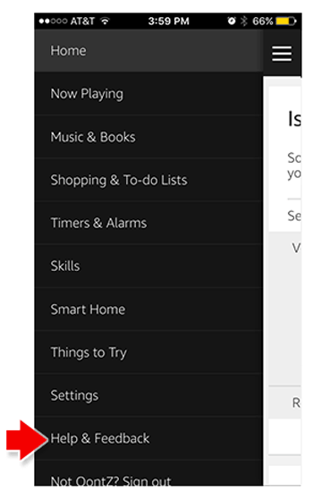
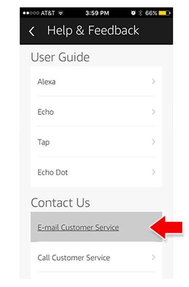

Pairing Your TaoTronics Speaker to the Amazon Echo Dot
Amazon's Echo Dot provides hands-free voice control for playing Amazon Music on your TaoTronics speaker — just ask for your favorite artist or song. or request a specific genre or mood. You can also search for music by lyrics. when a song or album was released. or let Alexa pick the music for you. Listen to any song with Amazon Music Unlimited. Amazon Echo Dot also provides hands-free voice control to Pandora. Spotify. iHeartRadio. and TuneIn for playing on your TaoTronics speaker.
Before you begin:
- Set your Amazon Echo Dot and TaoTronics speaker at least threefeet apart. When Amazon Echo Dot is close to external speakers. itmay be more difficult for Alexa to hear the wake word and other requests. `
- Turn your TaoTronics speaker on and turn the volume up.
- Disconnect any other Bluetooth devices from Amazon Echo Dot.Amazon Echo Dot can only connect to one Bluetooth device at a given time.
To connect Amazon Echo Dot to your TaoTronics speaker
-
1. Put your TaoTronics speaker into pairing mode
 -
2. Amazon Echo Dot requires the Alexa app for pairing to your TaoTronics speaker the first time. Open the Alexa app and select Settings.
 -
3.Select your Amazon Echo Dot device. and then select Bluetooth >Pair a New Device.
- 
- 
- 
-
4.Your Amazon Echo Dot enters pairing mode. When Amazon Echo Dot discovers your TaoTronics speaker. the speaker appears in the list of available speakers in the Alexa app.
 -
5.Select your TaoTronics speaker. Amazon Echo Dot connects to the speaker and Alexa then tells you if the connection is successful.
 -
6. In the Alexa app select Continue. Your TaoTronics speaker is nowpaired with your Amazon Echo Dot.
-
7. If you need assistance with your Alexa app. contact Amazon's support through the app. Open the Alexa app and select Help & Feedback > Email Customer Service
- 
- 
Tips:
- To control audio volume when connected to an TaoTronics speaker, use your Amazon Echo Dot (by voice or the volume buttons on top) and the volume controls on your TaoTronics speaker.
- To connect to a previously paired device, say 'Connect.' AmazonEcho Dot connects to the device that was last connected.
- To manage your Bluetooth devices. go to Settings > (Device Name) > Bluetooth
- Amazon Echo Dot continues to communicate to the speaker even when it is not playing audio. The Dot is keeping the speaker on and ready to play. In order to conserve your speaker's battery charge, say "Alexa. disconnect my speaker" when you are done listeningand the TaoTronics speaker will automatically turn off after 15 minutes.
Troubleshooting
If you're having trouble trying to connect your Amazon Echo Dot to your TaoTronics speaker:
- Make sure to unpair other devices from the speaker.
- Check that the battery for your TaoTronics speaker has a sufficient charge. plug your speaker into a charging source.
- Check for interference. Move your TaoTronics speaker and Amazon Echo Dot away from sources of interference, such as microwave ovens, baby monitors, and other wireless devices.
- In the Alexa app. forget the Bluetooth speaker. Go to Settings > (Your Amazon Echo Dot Device Name) > Bluetooth in the app, and then select your Bluetooth speaker. Select >Forget Device to unpair the speaker from Amazon Echo Dot.
- Try to reconnect the TaoTronics speaker to Amazon Echo Dot. Set the speaker to pairing mode. and then say. "Pair."
Poor quality or skipping audio:
Make sure you have an adequate WiFi signal to your Amazon Echo Dot.
Your TaoTronics speaker's battery charge becomes drained when connected to Amazon Echo Dot despite not playing audio:
Amazon Echo Dot continues to communicate to the speaker evenwhen it is not playing audio. The Dot is keeping the speaker on andready to play. In order to conserve your speaker's battery charge. say "Alexa, disconnect my speaker" when you are done listening andthe TaoTronics speaker will automatically turn off when no connection is made after 10 minutes.
Amazon, Alexa, and Amazon Echo Dot are registered trademarksof Amazon.com, Inc.